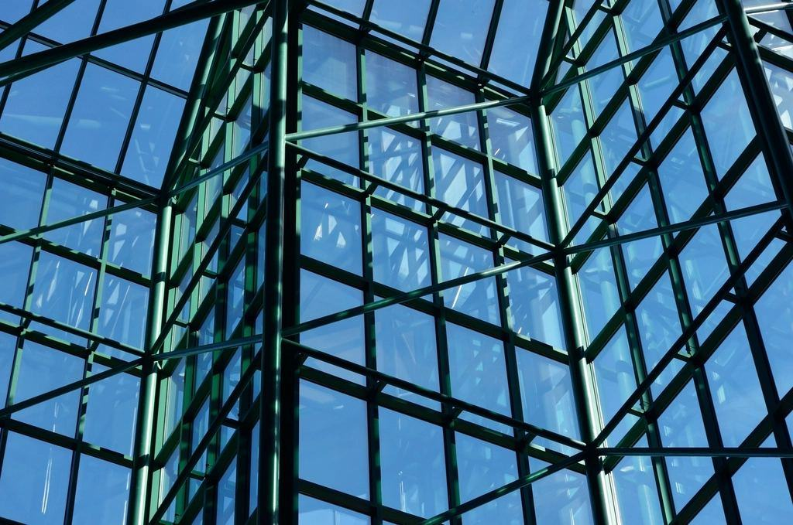
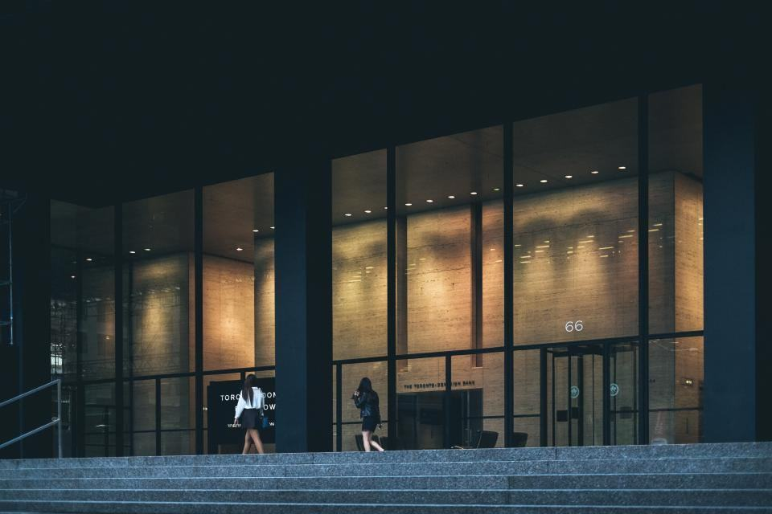

Referenser
Ett urval av uppdrag vi har utfört.
- 2026

Böda Strandstugor
38 stugor varje lördag från midsommar till mitten av augusti.
- 2025

Köpingsviks Stugby
24 stugor med lakan, handdukar och städning varje lördag i nio veckor.
- 2025

Kalkstensgård i Gårdby
Huvudbyggnad, ladugård med gästrum och 32 spröjsade fönster.
- 2025

Grönhögens Camping
Fjorton campingstugor och servicehuset städade dagligen under högsäsong.
- 2025

Gårdsbutiken i Vickleby
Butik och kafé städas två gånger i veckan från oktober till april.
- 2026

Sommarhus i Grankullavik
Tre hus kontrollerade dagen efter höststormen, med foton till ägarna.
Uthyrare och husägare
”Vi hyr ut tre stugor och bor i Stockholm. Varje lördag kommer bilderna på sms, och vi har inte fått ett enda klagomål på två somrar.”
Ulrike S. · Gårdby”Huset var vädrat och flugfritt när vi kom i juni. Till och med blommorna i trädgården var vattnade.”
Jenny K. · Böda”38 stugor och fyra timmar. De har aldrig varit sena, inte ens när det var kö över Ölandsbron hela midsommarlördagen.”